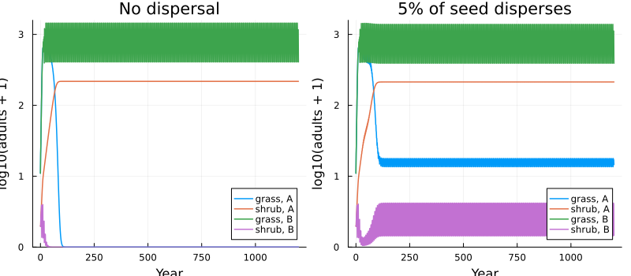
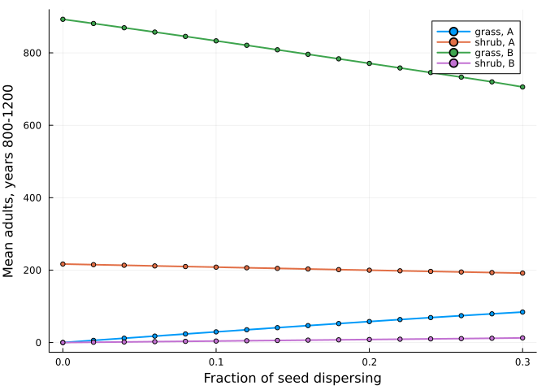

A metacommunity by nested composition
Simon Frost
- Why nest
- Species that export seed
- Two levels of wiring
- Isolated patches lose species; connected ones keep them
- Dispersal as a dial
- Reference
ENV["GKSwstype"] = "100"
using MatrixCommunityModels
using Catlab: @relation
using Plots, StatisticsWhy nest
Lytle & Tonkin (2023) point out that an isolated matrix community model tends to lose species, and that placing the habitat in a metacommunity “deserves further attention”. Because a composed community is itself something that can be composed, a metacommunity needs no new machinery: patches are communities, and dispersal is one more kind of pool.
Species that export seed
A grass and a shrub compete for space within a patch. Establishment of seedlings is limited by the free space in that patch. A fraction m of each species’ seed leaves the patch into a seed rain shared by all patches; each of the two patches receives half of it. A species therefore has two ports: its patch’s space, and its own seed rain.
Patch B burns periodically, which kills most shrubs and some grass. The environment of each year says which patches burn. Each species is a life-cycle net; the responses say that establishment needs free space and that fire reduces survival; the seed rain arrives as an inflow.
K = 1000.0
crowding(ctx) = max(0.0, 1 - ctx.pool.space / K)
function grass(patch; m)
burns(ctx) = getfield(ctx.env, patch)
life = ValuedProjectionNet([:seedling, :adult],
:establishing => [(:seedling => :adult) => 0.30],
:persisting => [(:adult => :adult) => 0.50],
:seeding => [(:adult => :seedling) => 6.0 * (1 - m)]) # seed that stays in the patch
plant = respond(life, :establishing => crowding, :persisting => ctx -> burns(ctx) ? 0.7 : 1.0)
plant = inflow(plant, :seedling => ctx -> ctx.pool.grass_rain / 2) # this patch's half of the seed rain
species(Symbol(:grass_, patch), births(plant, :seeding);
occupies = [:space => [:adult => 1.0], :grass_rain => [:adult => 6.0 * m]])
end
function shrub(patch; m)
burns(ctx) = getfield(ctx.env, patch)
life = ValuedProjectionNet([:seedling, :juvenile, :adult],
:establishing => [(:seedling => :juvenile) => 0.30],
:maturing => [(:juvenile => :adult) => 0.50],
:persisting => [(:adult => :adult) => 0.95],
:seeding => [(:adult => :seedling) => 3.0 * (1 - m)])
plant = respond(life, :establishing => crowding, :maturing => ctx -> burns(ctx) ? 0.1 : 1.0,
:persisting => ctx -> burns(ctx) ? 0.10 / 0.95 : 1.0)
plant = inflow(plant, :seedling => ctx -> ctx.pool.shrub_rain / 2)
species(Symbol(:shrub_, patch), births(plant, :seeding);
occupies = [:space => [:juvenile => 1.0, :adult => 4.0], :shrub_rain => [:adult => 3.0 * m]])
endshrub (generic function with 1 method)Two levels of wiring
Within a patch the two species share space, which stays inside the patch, and each exposes its seed rain:
patch_diagram = @relation (grass_rain, shrub_rain) begin
grass(space, grass_rain)
shrub(space, shrub_rain)
endCatlab.WiringDiagrams.RelationDiagrams.UntypedUnnamedRelationDiagram{Symbol, Symbol} {Box:2, Port:4, OuterPort:2, Junction:3, Name:0, VarName:0}
| Box | name |
|---|---|
| 1 | grass |
| 2 | shrub |
| Port | box | junction |
|---|---|---|
| 1 | 1 | 3 |
| 2 | 1 | 1 |
| 3 | 2 | 3 |
| 4 | 2 | 2 |
| OuterPort | outer_junction |
|---|---|
| 1 | 1 |
| 2 | 2 |
| Junction | variable |
|---|---|
| 1 | grass_rain |
| 2 | shrub_rain |
| 3 | space |
Between patches, the seed rains are joined:
meta_diagram = @relation (grass_rain, shrub_rain) begin
A(grass_rain, shrub_rain)
B(grass_rain, shrub_rain)
endCatlab.WiringDiagrams.RelationDiagrams.UntypedUnnamedRelationDiagram{Symbol, Symbol} {Box:2, Port:4, OuterPort:2, Junction:2, Name:0, VarName:0}
| Box | name |
|---|---|
| 1 | A |
| 2 | B |
| Port | box | junction |
|---|---|---|
| 1 | 1 | 1 |
| 2 | 1 | 2 |
| 3 | 2 | 1 |
| 4 | 2 | 2 |
| OuterPort | outer_junction |
|---|---|
| 1 | 1 |
| 2 | 2 |
| Junction | variable |
|---|---|
| 1 | grass_rain |
| 2 | shrub_rain |
patch(p; m) = compose(patch_diagram, [grass(p; m), shrub(p; m)])
metacommunity(m) = compose(meta_diagram, [patch(:A; m), patch(:B; m)])
meta = metacommunity(0.05)
species_names(meta), pool_names(meta)([:grass_A, :shrub_A, :grass_B, :shrub_B], [:grass_rain, :shrub_rain])The space pools do not appear among the metacommunity’s pools: each belongs to one patch and nothing outside can read it.
Isolated patches lose species; connected ones keep them
Patch B burns every sixth year.
envs = [(A = false, B = t % 6 == 0) for t in 1:1200]
n0 = [50.0, 10.0, 5.0, 0.0, 1.0, 50.0, 10.0, 5.0, 0.0, 1.0]
isolated = project(metacommunity(0.0), n0, envs)
connected = project(meta, n0, envs)
adults(sol) = [sol[:grass_A][:, 2] sol[:shrub_A][:, 3] sol[:grass_B][:, 2] sol[:shrub_B][:, 3]]
labels = ["grass, A" "shrub, A" "grass, B" "shrub, B"]
plot(plot(isolated.t, log10.(adults(isolated) .+ 1); label = labels, title = "No dispersal", lw = 1.5),
plot(connected.t, log10.(adults(connected) .+ 1); label = labels, title = "5% of seed disperses", lw = 1.5);
layout = (1, 2), xlabel = "Year", ylabel = "log10(adults + 1)", ylims = (0, 3.2), size = (800, 350),
legend = :bottomright)
late(sol) = round.(vec(mean(adults(sol)[801:end, :]; dims = 1)); digits = 1)
(isolated = late(isolated), connected = late(connected))(isolated = [0.0, 216.8, 892.7, 0.0], connected = [14.9, 212.5, 863.4, 2.1])Without dispersal the shrub excludes the grass in the unburnt patch and fire excludes the shrub in the burnt one. With 5% of seed dispersing, each species is maintained in the patch where it would otherwise disappear, by seed arriving from the patch where it thrives.
Dispersal as a dial
ms = 0.0:0.02:0.3
means = reduce(vcat, [late(project(metacommunity(m), n0, envs))' for m in ms])
plot(ms, means; label = labels, xlabel = "Fraction of seed dispersing", ylabel = "Mean adults, years 800-1200",
lw = 2, marker = :circle, ms = 3)
Reference
Lytle, D. A. & Tonkin, J. D. (2023). Matrix community models for ecology and evolution. npj Biodiversity 2, 26.